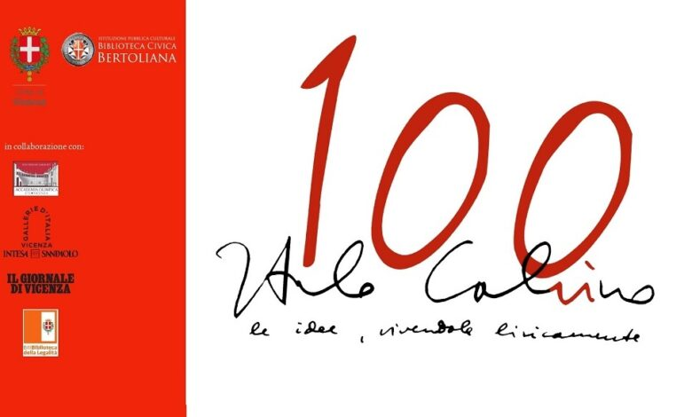

Italo calvino inizio del progetto
Sebbene le copertine richieste per la gara fossero tre, Smyth ne ha presentate sette. Per farle ha avuto quasi due mesi che per le tempistiche abituali del suo lavoro sono tanto tempo («di solito mi danno due settimane»).

Il suo progetto è stato appunto quello che Flegenheimer e i suoi colleghi hanno scelto e successivamente Smyth lo ha modificato per venire incontro alle richieste di Mondadori.
